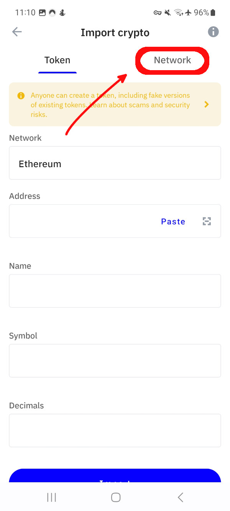

Adding Rails Network to TrustWallet #
Note: You can click/tap on the variables to copy them into your clipboard.
- Open TrustWallet and click on the manage assets icon in the top right corner.

- Now click on the plus icon in the top right corner.

- Select the Network tab in the next dialog.

- In this dialog, use the following variables:
- Network: Ethereum
- Name: Rails Network
- Symbol: STEAMX
- Node URL: https://mainnet.steamexchange.io
- Explorer URL (Optional): https://explore.steamexchange.io
- Then click on Import.

It should add our Network to TrustWallet.